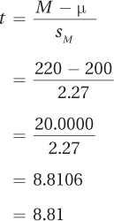
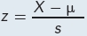

7.1 Calculating the Single-Sample t Test
 StatClips: One Sample Hypothesis TestingVideo on LaunchPad
StatClips: One Sample Hypothesis TestingVideo on LaunchPad
StatClips: One Sample Test of Proportions, Two Sample Tests of MeansVideo on LaunchPad
The single-sample t test is used to compare a sample mean to a specific value like a population mean. As it deals with means, it is used when the dependent variable is measured at the interval or ratio level. It does the same thing as a single-sample z test, but it is more commonly used because it doesn’t require knowing the population standard deviation, σ. Instead, the single-sample t test uses the sample standard deviation, s. As long as there is access to the sample, it is possible to calculate s.
For an example, imagine the following scenario. Dr. Farshad, a clinical psychologist, wondered whether adults with attention deficit hyperactivity disorder (ADHD) had reflexes that differed in speed from those of the general population. She located a test for reaction time that was normed on adults in the United States. The average reaction time was 200 milliseconds (msec). This is a population mean, so the Greek letter mu is used to represent it and one would write μ = 200.
From the various ADHD treatment centers in her home state of Illinois, Dr. Farshad obtained a random sample of 141 adults who had been diagnosed with ADHD. Each adult was tested individually on the reaction-time test. The mean reaction time for the sample of 141 was 220 msec (M = 220), with a standard deviation of 27 msec (s = 27). (Note that because these are values calculated from a sample, the abbreviations for the mean and standard deviation are Roman, not Greek, letters.)
216
Dr. Farshad’s question is whether adults with ADHD differ in reaction time from the general population. 220 msec is definitely different from 200 msec, so the mean reaction time of this sample of adults with ADHD is different from the population mean. However, Dr. Farshad doesn’t know if the difference is a statistically significant one! It’s possible that the sample mean is different from the population mean due to sampling error. To answer her question, she’s going to need hypothesis testing.
The Six Steps of Hypothesis Testing
Let’s follow Dr. Farshad through the six steps of hypothesis testing for the single-sample t test: (1) picking a test; (2) checking the assumptions; (3) listing the hypotheses; (4) setting the decision rule; (5) calculating the test statistic; and (6) interpreting the results. Remember the mnemonic: “Tom and Harry despise crabby infants.”
Step 1 Pick a Test
The first step in hypothesis testing involves selecting the appropriate statistical test. Dr. Farshad is comparing the mean of a sample to the mean of a population, so she could use either a single-sample z test or a single-sample t test. However, she doesn’t know the population standard deviation. She’ll have to use the single-sample t test to figure out whether the mean reaction time of the sample of adults with ADHD is statistically different from the mean reaction time of the general population.
Step 2 Check the Assumptions
To determine if the sample mean is statistically different from the population mean, Dr. Farshad plans to use a single-sample t test. However, a single-sample t test can only be used if its assumptions are met. The three assumptions for the single-sample t test are the same as they were for the single-sample z test and are listed in Table 7.1.
217
The first assumption involves whether the sample is a random sample from the population. This is a robust assumption. So if it is violated—and it often is—the analysis can still be completed. One just has to be careful about the population to which one generalizes the results. In this example, the sample is a random sample from the population of adults with ADHD in one state. This means that Dr. Farshad should only generalize her results to that state.
The second assumption is that the observations within the sample are independent. This assumption is not robust. If it is violated, one cannot proceed with the single-sample t test. In this example, each participant is in the sample only once and the reaction time of each case is not influenced by any other case. The cases were selected randomly and tested individually, so they are independent and the second assumption is not violated.
The third assumption is that the dependent variable, reaction time, is normally distributed in the population. This assumption is robust and the analysis can be completed if the assumption is violated as long as the sample size is large, say, 30 or more, and the deviation from normality is not too large. How does one test this assumption? One way is simply assuming that it is true—it is generally accepted that psychological characteristics (like personality) and physical characteristics (like height) are normally distributed. So, Dr. Farshad is willing to assume that reaction time is normally distributed. Another way is to make a graph of the data. In Figure 7.1, the histogram that Dr. Farshad made for the frequency distribution of the reaction-time data can be seen. Though not perfectly normal, it has a normal-ish shape. That, combined with a large sample size, leads Dr. Farshad to feel sure that this assumption has not been violated.
A Common Question
Q Why does the normality assumption exist?
A Hypothesis testing works by comparing the calculated value of the statistic to the expected value. The expected value comes from the sampling distribution, so the normality assumption is really about the shape of the sampling distribution. We know from the central limit theorem that the sampling distribution of the mean will be normal if N is large. If N is small, the sampling distribution will be normal if the population from which the samples are drawn is normal. And that is why the normality assumption exists.
218
The assumptions have been met, so she can proceed with the planned statistical test, the single-sample t test.
Step 3 List the Hypotheses
Before writing the hypotheses, the researcher has to know if he or she is doing a one-tailed test or a two-tailed test. Two-tailed tests, called nondirectional tests, are more commonly used and they are a bit more conservative, in the sense that they make it harder to reject the null hypothesis. So, a two-tailed test is the “default” option—if in doubt, choose to do a two-tailed test. But, here’s the difference between the two types of tests:
A two-tailed test is used when the researcher is testing for a difference in either direction. Before collecting her data, Dr. Farshad didn’t know whether adults with ADHD had faster or slower reaction times. This calls for a nondirectional test and nondirectional hypotheses.
A one-tailed test is used when the researcher has a prediction about the direction of the difference in advance of collecting the data. As long as the difference is in the expected direction, a one-tailed test makes it easier to obtain statistically significant results.
The hypotheses for the nondirectional (two-tailed) single-sample t test for Dr. Farshad’s study are
H0: μADHD-Adults = 200
H1: μADHD-Adults ≠ 200
The null hypothesis (H0) says that the mean reaction time for the population of adults with ADHD is not different from some specified value. In this case, that value is the mean reaction time, 200 msec, of Americans in general. (The null hypothesis could be phrased as μADHD-Adults = μAmericans = 200.)
The alternative hypothesis (H1) says that the mean reaction time for the population of adults with ADHD is something other than the specified value of 200 msec. It doesn’t say whether it is faster or slower, just that the mean reaction time is different. This means that the observed sample mean should be different enough from 200 msec that sampling error does not explain the difference. (The alternative hypothesis could be phrased as μADHD-Adults ≠ μAmericans.)
219
If Dr. Farshad had believed that adults with ADHD had, for example, slower reaction times than the general population, then she would have planned a one-tailed test. In such a situation, the hypotheses would have been
H0: μADHD-Adults ≤ 200
H1: μADHD-Adults > 200
Never forget that the alternative hypothesis expresses what the researcher believes to be true and that the researcher wants to be forced to reject the null hypothesis, so he or she has to accept the alternative hypothesis. In this one-tailed test example, the researcher’s belief is that the reaction time is longer (i.e., slower) for people with ADHD. Once the alternative hypothesis is formed, the null hypothesis is written to make both hypotheses all-inclusive and mutually exclusive. Here, the null hypothesis would be that people with ADHD have reaction times the same as or faster than those of the general population.
Step 4 Set the Decision Rule
Setting the decision rule involves determining when to reject the null hypothesis and when to fail to reject the null hypothesis. To set the decision rule, find the critical value of the test statistic, the boundary between the rare zone and the common zone of the sampling distribution. For the single-sample t test, this will be a critical value of t.
What is t? t is the statistic that is calculated in the next step of the six-step hypothesis test procedure. The statistic t is a lot like the statistic z in the single-sample z test:
If the null hypothesis is true and the sample mean is exactly equal to the specified value, t will equal zero.
As the difference between the sample mean and the specified value grows, so does the t value.
When the value of t that is calculated (the observed value of t) differs enough from zero (the expected value of t), then the null hypothesis is rejected.
The Critical Value of t
The point that separates “differs enough from zero” from “doesn’t differ enough from zero” is called the critical value of t, abbreviated tcv. To find tcv, three pieces of information are needed:
Is the test one-tailed or two-tailed?
How willing is one to make a Type I error?
How large is the sample size?
The first question, whether a one-tailed or a two-tailed test is being done, was already answered when writing the hypotheses. Dr. Farshad is examining whether adults with ADHD have faster or slower reaction times than the general population. The reaction-time study calls for a two-tailed test because the hypotheses didn’t specify a direction for the difference.
The second question in determining tcv involves how willing one is to make a Type I error. A Type I error occurs when the researcher concludes, mistakenly, that the null hypothesis should be rejected. A common convention in statistics is to choose to have no more than a 5% chance of making a Type I error. As alpha (α) is the probability of a Type I error, statisticians phrase this as “setting alpha at .05” or as “α = .05.” Dr. Farshad has chosen to follow convention and set alpha at .05.
220
Overall, she wants her chance of making a Type I error to be no more than 5%. She has chosen to do a two-tailed test, so she will need to split that 5% in two and put 2.5% in each tail of the sampling distribution. This means Dr. Farshad will have two critical values of t, one positive and one negative. (If the test were one-tailed, all 5% of the rare zone would fall on one side and there would be only one critical value of t.)
The third question for determining tcv, how large the sample size is, matters because the shape of the t distribution changes as the sample size changes. The tail of a t distribution is larger when the sample size is smaller. As a result, the critical value of t is farther away from zero when the sample size is small.
This is difficult to visualize without a concrete example, so look at Figure 7.2 in which two sampling distributions of t are superimposed—one for N = 6 (the dotted line) and one for N = 60 (the solid line). Which line is on top—the dotted line or the solid line—depends on whether one is looking at the center of the distribution or the tails.
Look at the tails. There, the dotted line (the one for the t distribution when N = 6) is above the solid line for the t distribution when N = 60. What does it mean for one line to be on top of the other? The y-axis measures frequency, so when one line is above another, this means it has a higher frequency at that point.
Focus on the positive side, the right-hand side, of the distribution. (Because the t distribution is symmetric, both sides are the same.) Note that around t = 1.5, the two lines cross. From that point on, the frequencies at each t value are higher for the N = 6 distribution than for the N = 60 distribution. Which distribution has more cases with t values above 1.50, N = 6 or N = 60? The answer is that the N = 6 distribution has a higher percentage of cases in the tail.
The implication of this is important: the total frequency of scores in the tail is higher for the distribution with the smaller sample size (N = 6). To cut off the extreme 2.5% of the scores for each distribution, the cut-off point will fall farther away from zero for the N = 6 distribution than for the N = 60 distribution. In this example, the cut-off points (the critical values of t) are 2.57 for N = 6 and 2.00 for N = 60. The critical value falls closer to zero when the sample size is larger, and it falls farther away from zero when the sample size is smaller.
221
Sample size affects the critical value of t, and the critical value determines the rare and common zones in the sampling distribution. (Remember, when a result falls in the rare zone, the null hypothesis is rejected; when a result falls in the common zone, the null hypothesis is not rejected.) So, sample size affects the ability to reject the null hypothesis:
When the sample size is small, the critical value of t falls farther away from zero, making the rare zone harder to reach, making it more difficult to reject the null hypothesis.
Larger sample sizes have the opposite effect. When a sample size is large, the critical value of t falls closer to zero. As a result, the rare zone is easier to reach, which makes it easier to reject the null hypothesis.
The goal of research almost always is to reject the null hypothesis, so having a larger sample size is an advantage.
To find the critical value of t for a given sample size, use Appendix Table 3, a table of critical values of t. A portion of Appendix Table 3 is shown in Table 7.2.

There are several things to note in Table 7.2. First, note that there are different rows for the critical values. The rows represent different critical values of t based on sample size. The heading for the rows is “df,” which stands for degrees of freedom. Degrees of freedom represent the number of values in a sample that are free to vary. For example, if the mean of three cases is 10, then the values for only two cases are free to vary. If one case has a score of 9 and another case has a score of 11, then the third case has to have a score of 10. In that example, there are three values, and 2 degrees of freedom—once two values are known, the third is determined.
222
Degrees of freedom and sample size are yoked together. As the sample size becomes larger, the degrees of freedom increase. And, other things being equal, larger sample sizes are better because there is a greater likelihood that the sample represents the population. In fact, when the sample size is infinitely large, the t distribution is the same as the z distribution because the whole population is being sampled.
For a single-sample t test, the degrees of freedom are calculated as the sample size minus 1. This is shown in Equation 7.1.
Equation 7.1 Degrees of Freedom (df) for a Single-Sample t Test
df = N – 1
where df = degrees of freedom
N = sample size
For the reaction-time study, there are 141 participants in the sample, so degrees of freedom are calculated like this:
df = 141 – 1
= 140
Look at Table 7.2 again. The second thing to note in the table of critical values of t is that there are four columns of critical values. Which column to use depends on two factors: (1) if a one-tailed test or two-tailed test is being done, and (2) where alpha, the willingness to make a Type I error, is set.
The critical values of t in the column for a two-tailed test with a 5% chance of Type I error (i.e., α = .05) have been bolded to make them easier to find because they are the most commonly used.
With the reaction-time study as a two-tailed test, Dr. Farshad would reject the null hypothesis if adults with ADHD had slower reaction times than the general population or if adults with ADHD had faster reaction times than the general population. That is what a two-tailed test means.
Under these conditions (df = 140, α = .05, two-tailed), Dr. Farshad finds that the critical value of t is ±1.977 (i.e., –1.977 and 1.977). These values are marked in Figure 7.3, along with the rare and common zones.
The critical value of t would be different if this were a one-tailed test. If Dr. Farshad had reason, in advance of collecting data, to believe that adults with ADHD had slower reaction times, then she could do a one-tailed test. In such a case, she would only reject the null hypothesis if adults with ADHD had slower reaction times than the general population. For df = 140 and with α = .05, the one-tailed critical value of t would be 1.656. This critical value of 1.656 is closer to zero, the midpoint of the sampling distribution, than was the critical value (1.977) for the two-tailed test. This means the rare zone is more easily reached and makes it easier to reject the null hypothesis for the one-tailed test.
Figure 7.4 shows the larger rare zone on the right for the one-tailed test. The rare zone for the two-tailed test is marked with /// and the rare zone for the one-tailed test is marked with \\\. Though the total percentage of the curve that is the rare zone is the same for the two tests, notice how more area of the rare zone is marked off on one side by the one-tailed test (\\\) than by the two-tailed test (///). As a result, it is easier to reject the null hypothesis with a one-tailed test than a two-tailed test, as long as the difference is in the expected direction. This is an advantage for one-tailed tests. The advantage disappears if there is a difference, but it is not in the hypothesized direction.
223
Dr. Farshad was conducting an exploratory study to see if adults with ADHD differed in reaction time—in either direction—from the general population. So, she’s doing a two-tailed test. Here’s the general version of the decision rule for a two-tailed test:
If t ≤ –tcv or if t ≥ tcv, reject H0.
If –tcv < t < tcv, fail to reject H0.
224
When the first statement is true, the observed value of t falls in the rare zone, and the null hypothesis is rejected. When the second statement is true, t falls in the common zone, and the researcher will fail to reject the null hypothesis.
For the reaction-time study, the specific decision rule is:
Reject the null hypothesis if t ≤ –1.977 or if t ≥ 1.977.
Fail to reject the null hypothesis if –1.977 < t < 1.977.
A Common Question
Q Appendix Table 3 doesn’t contain degrees of freedom for all possible values. What does one do if df = 54, for example?
A In the TV game show The Price Is Right, the person who comes closest to guessing the price of an object without exceeding the price wins. Follow that rule and use the degrees of freedom that are closest without going over. If df = 54 and the table only contains critical values of t for 50 and 55 degrees of freedom, use tcv for df = 50.
Step 5 Calculate the Test Statistic
It is time to calculate the t value that compares the sample mean for reaction time (220 msec) to the specified value, the population mean for a reaction time of 200 msec. The formula is shown in Equation 7.2.
Equation 7.2 Formula for Calculating a Single-Sample t Test
where t = t value
M = sample mean
μ = population mean (or a specified value)
sM = estimated standard error of the mean (Equation 5.2)
The numerator in the single-sample t test formula subtracts the population mean (μ) from the sample mean (M). The difference is then divided by the estimated standard error of the mean (sM). Before using Equation 7.2, one needs to know the estimated standard error of the mean. This is calculated using Equation 5.2:
225
Once the estimated standard error of the mean has been calculated, all the values needed to complete Equation 7.2 are available: M = 220, μ = 200, and sM = 2.27. Here are the calculations to find the t value:

Step 5 is done and Dr. Farshad knows the t value: t = 8.81. The sixth and final step of hypothesis testing is interpretation. We’ll turn to that after a little more practice with the first five steps of hypothesis testing in Worked Example 7.1.
A Common Question
Q The equation for t, looks a lot like the equation for z, . Are they similar?
A Yes they are. Both serve to standardize deviation scores, so we can tell how common they are.
Worked Example 7.1
Adjusting to the first year of college can be hard, especially if something traumatic happens back at home. A veterinarian in an imaginary college town, Dr. Richman, wondered if the GPA went down for students who lost a family pet while they were away at college. The vet found 11 students at the college who indicated that their pets at home had died during the year. He had each student report his or her GPA for the year and found the mean was 2.58, with a standard deviation of 0.50. From the college registrar, Dr. Richman learned that the mean GPA for all students for the year was 2.68. Thus, M = 2.58 and μ = 2.68. Does losing a pet have a negative impact on GPA?
The answer appears to be yes, because the sample of students who have lost a pet has a GPA lower than the population’s GPA. But, isn’t it possible, due to sampling error, that a random sample of 11 people from a population where μ = 2.68 could have a sample mean of 2.58? The vet is going to need hypothesis testing to determine if the difference between the sample and the population is statistically significant.
Step 1 Pick a Test. Either a single-sample z test or a single-sample t test can be used to compare the mean of a sample to a specified value like the mean of a population. However, when the population standard deviation is unknown, a single-sample t test must be used. This situation, with σ unknown, calls for a single-sample t test.
226
Step 2 Check the Assumptions. The population is college students who have lost their pets. The sample is not a random sample from the population because all participants self-selected and come from only one college. It is possible that the students who lost pets and who chose not to participate differed in some way from those who volunteered. So, the first assumption is violated. Luckily, the first assumption is robust and can be violated, though Dr. Richman will need to be careful about generalizing from the results.
There’s no reason to believe that the second assumption is violated. The observations seem to be independent. No participants are siblings who would have lost the same pet. Further, participants did not come from a support group for people who had lost a pet, where people might have influenced each other in coping with their losses. And each participant was in the sample only once.
The third assumption is not violated because Dr. Richman is willing to assume that GPA, like intelligence, is normally distributed. (The sample size, 11, is too small to provide a meaningful histogram.) None of the nonrobust assumptions was violated, so Dr. Richman can proceed with the single-sample t test.
Step 3 List the Hypotheses. Dr. Richman believes that losing a pet will harm adjustment, so he is doing a one-tailed test. Here are the null and alternative hypotheses:
H0: μStudentswithPetLoss ≥ 2.68
H1: μStudentswithPetLoss < 2.68
The null hypothesis (H0) says that the mean GPA of the population of first-year students who have lost a pet during the year is the same or greater than the mean GPA of students in general for that year. If the null hypothesis is true, when the vet takes a sample of college students who have lost a pet, their mean should be close enough to 2.68 that the difference can be explained by sampling error.
The alternative hypothesis (H1) says that what the veterinarian believes to be true is true: the population of students with pet loss has a mean GPA lower than the mean GPA of all students. Therefore, a mean for a sample of pet-loss students should be far enough below 2.68 that sampling error is not a plausible explanation for the difference.
Step 4 Set the Decision Rule. Dr. Richman has directional hypotheses and is using the default value of 5% for his willingness to make a Type I error. This means that it is a one-tailed test and that alpha is set at .05. The sample size is 11, and the vet will use Equation 7.1 to determine the degrees of freedom:
df = N – 1
= 11 – 1
= 10
Using Appendix Table 3, Dr. Richman finds tcv = 1.812. Because he is doing a one-tailed test, he has to decide whether the critical value of t is –1.812 or +1.812. If his theory is correct and losing a pet hurts students’ GPAs, then the numerator of the single-sample t test formula (Equation 7.2), which is M – μ, will be a negative number because M should be below 2.68. Hence, tcv is a negative value, –1.812. Here, and in Figure 7.5, is the vet’s decision rule:
If t ≤ –1.812, reject H0.
If t > –1.812, fail to reject H0.
227
Step 5 Calculate the Test Statistic. Before calculating t, the vet needs to calculate sM using Equation 5.2:
Next, he’ll use sM in Equation 7.2 to calculate t:
Step 5 is completed and the vet now knows the value of the test statistic: t = –0.67. In the next section, we’ll learn how to explain what this means with regard to the impact of the loss of a pet on GPA.
228
Practice Problems 7.1
Review Your Knowledge
7.01 A researcher draws a sample from a population and finds that the sample mean is different from what he thought the population mean was. One explanation for the discrepancy is that he was wrong about what the population mean is. What’s another explanation for the discrepancy?
7.02 What are the six steps to be followed in conducting a hypothesis test?
7.03 When should a single-sample t test be used?
7.04 What are the assumptions for a single-sample t test?
7.05 Which rare zone is larger if the observed difference is in the expected direction—for a one-tailed test or a two-tailed test?
Apply Your Knowledge
7.06 A researcher has a sample of Nobel Prize winners. She thinks that they may be smarter than average. If the average IQ is 100, what are the null and alternative hypotheses for a single-sample t test?
7.07 A researcher has drawn a random sample of 48 cases from a population. He plans to use a single-sample t test to compare the sample mean to the population mean. He has set α at .05 and is doing a two-tailed test. Write out the decision rule regarding the null hypothesis.
7.08 If N = 17 and s = 6, what is sM?
7.09 If M = 24, μ = 30, and sM = 8, what is t?